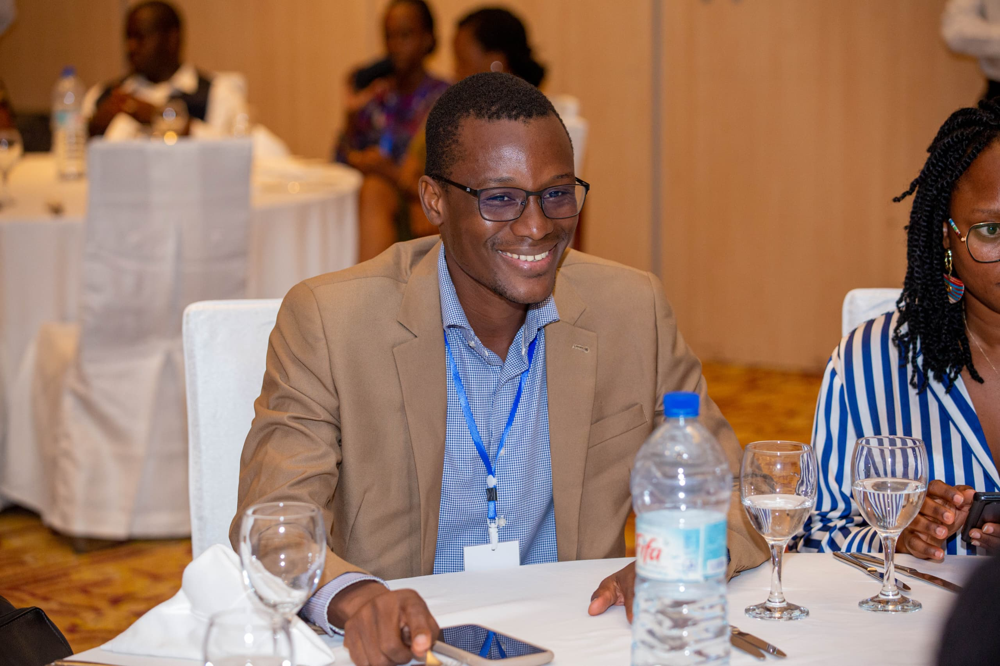
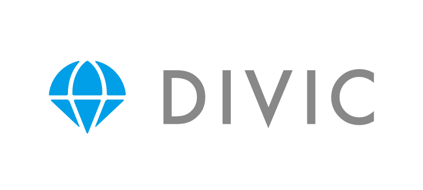
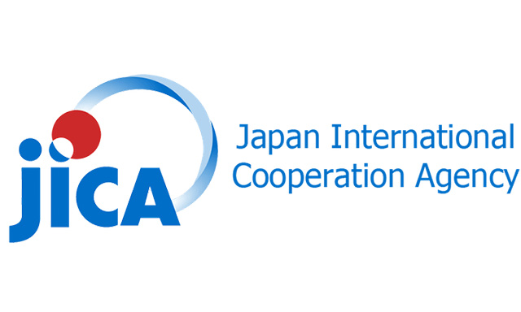
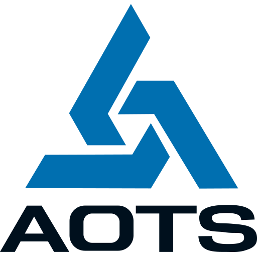
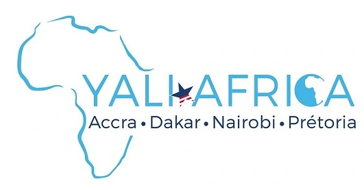

Programmes d’éducation
Conseil, conception et coordination de programmes de formation technologique pour les institutions publiques, entreprises et partenaires au développement.
Éducation technologique · Afrique
Nous concevons les programmes, les partenariats et les environnements d’apprentissage qui rapprochent les talents africains des opportunités mondiales.

Ancrés au Bénin. Connectés au Japon. Engagés pour l’Afrique.
Notre mission
Africa Samurai Consulting développe le capital humain par la technologie éducative et l’éducation technologique. Nous réunissons institutions, entreprises et communautés pour construire des solutions adaptées aux réalités africaines.
La technologie compte lorsqu’elle devient une capacité humaine durable.
Ce que nous faisons
Une chaîne d’exécution complète : comprendre le contexte, aligner les parties prenantes, concevoir le programme et coordonner sa mise en œuvre.
Conseil, conception et coordination de programmes de formation technologique pour les institutions publiques, entreprises et partenaires au développement.
Mise en relation avec les décideurs de l’éducation, ministères, universités et organismes de formation, puis coordination locale des collaborations.
Un espace de formation continue, de co-création, de mentorat et d’incubation, avec des stages pratiques pour les jeunes diplômés.
Des environnements d’apprentissage assistés par IA conçus pour fonctionner avec une connectivité limitée, en partenariat avec DIVIC.
Impact documenté
personnes accompagnées depuis 2018
jeunes placés en emplois et stages décents
jeunes soutenus dans la création de startups technologiques
année de création au Bénin
Africa × Japan
ASC et DIVIC développent une infrastructure capable de fournir aux élèves du secondaire un retour immédiat et progressif sur leurs exercices de mathématiques manuscrits, en français et sans connexion internet permanente.
Écosystème




Direction
L’Afrique ne manque pas de talent. Notre rôle est de construire les conditions qui permettent à ce talent de circuler, d’apprendre et de créer.
Commencer une collaboration